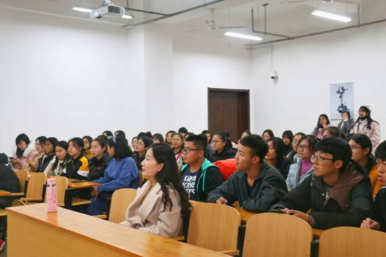
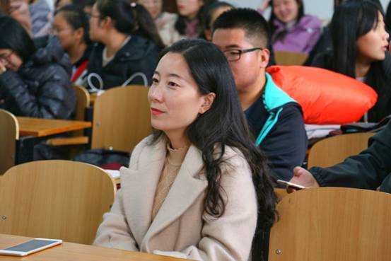

为弘扬中华传统文化，丰富学生课余生活，12月5日中午13时30分，文学院18级广播电视学专业在汇文书院A201举办了首届诗词大赛。辅导员张盼盼出席了本次比赛，18级广播电视学专业81名学生参加了比赛。此次比赛由石芸和代英鑫两位同学主持。

本届诗词大赛分为"移花接木"、"合力断金"和"飞花令"三个环节。"移花接木"环节由八十道诗词填空题组成，同学们依次补充诗句，答对一句得一分，两班同学们精彩激烈的竞答迅速将比赛气氛带入高潮。在随后的"合力断金"环节中，比赛双方各选出五名代表抽选题目背诵古诗，背诵流畅即可得分。十位同学流利完整地背诵出了所选诗词，他们深厚的古诗文功底和良好的现场发挥赢得了在场同学的热烈掌声。最后进行的是"飞花令"环节。本环节以"风花雪月春秋"为题，采取三局两胜制，参赛学生需背诵出带有题目字眼的诗句。比赛过程中，面对主持人的提问，双方参赛选手始终从容不迫，应答如流。最终，广播电视学1805班以五分的优势赢得了本次诗词大赛第一名。

赛后，张盼盼老师作总结发言。在对所有参赛选手提出表扬的同时，张盼盼老师也对同学们提出了新的期盼与要求。她说，除了扎实的专业知识外，深厚的文学素养也是每个学生应该具备的，同学们要更加重视阅读量的积累，多读书读好书，培养浓厚的文化底蕴。
"箱处卷轴心常逸，腹有诗书气自华"。此次诗词大赛的举办，在为同学们提供一个自我展示平台的同时，也帮助同学们重新领略到中华诗词的独特魅力。此外，本次活动的开展对于陶冶学生情操，营造良好的学习氛围也起到了积极的推动作用。
撰稿｜赵雪
摄影｜18级广电专业学生
审核丨刘晋云